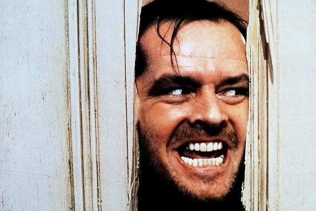
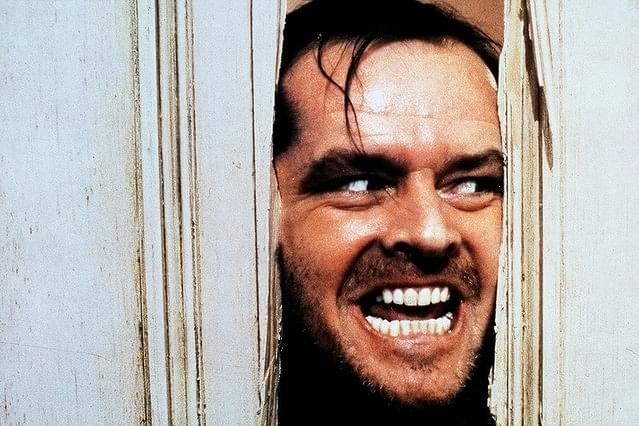
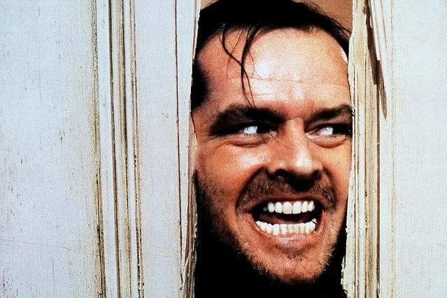
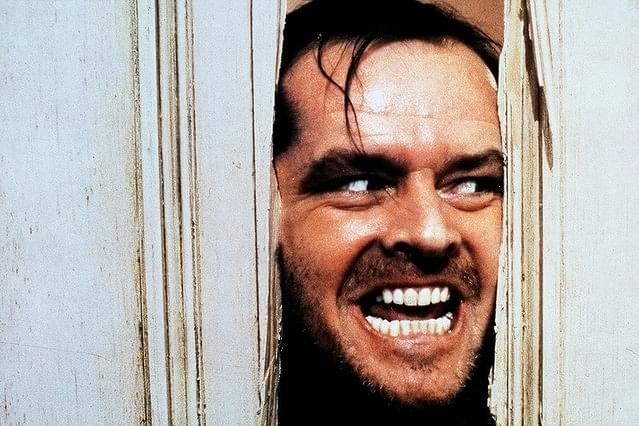

どうも！天池渚です！このサイトでは私なぎさの趣味などを紹介していきます。
特に洋画のホラー映画が好きです。
音楽フェスに行って盛り上がるのが最高です！
趣味を通じて、たくさんの人と関わるのが大好きです。
洋画ホラーの中でもA24の作品が大好き！ストーリーや演出がとても深くて何度見ても飽きません。
友達と行く音楽フェスやライブは最高の思い出です。毎年どこかのフェスやライブに行って、汗だくで盛り上がってます！
 


